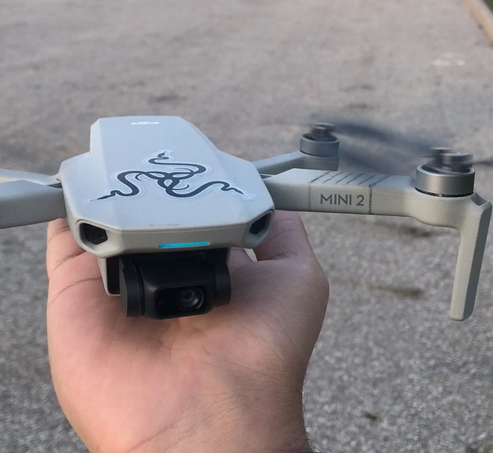

Review of the DJI Mini 2

I have used the DJI Mini 2 for almost 3 years and according to the DJI app I had 633 minuites of fly time.
I bought it new a month before the mini 3 series came out but I was able to take it back to my home country and film there so
it was worth it. Mini 2 was one of the most advanced drones under 250g when it came out. It had a camera capable of 4k 30 fps video
recording and the range of transmission was revolutionary. In the 3 years of ownership it provided me with a great experience.
Let's talk about some features that impressed me:
- RTH
- RTH stands for return to home, this feature allows the drone to come back to where it took off from. This is a very useful feature of the drone
because everytime the controller would lose connection due to interference it would start coming back to me and then it would reconnect.
- Wind Resistance
- This feature allows the drone to fly even during windy situations as the drone actively fights the wind to stay stable.
- Performance after years
- The speed and overall flight experience stayed the same over the year meaning that the drone would be able to last a long time
even after use in very light rain, dense fog, high and cold temp weathers.
Some things I wanted:
- More Battery Life
- The drone had a maximum flight time of 30 minutes. This meant only 15 mins to fly where you want it and 15 mins max to come back to land.
Even though you can buy more batteries that you can reload and fly again, but this doesn't allow the drone to get into position and then have enough time for a time lapse.
- Night time camera quality
- The nighttime quality of the drone footage was often blurry and distorted. This was due to the small sensor due to the technology
available at the time of development. There were many times I didn't record at night because I knew the quality wouldn't be great.
- Internal storage
- The drone didn't have internal storage meaning that if I forgot my micro sd card I wasn't able to capture any high quality content.
Email me at: chowdh52@uwindsor.ca
Back to Top of Page
Adib Md Alim Chowdhury
chowdh52@uwindsor.ca